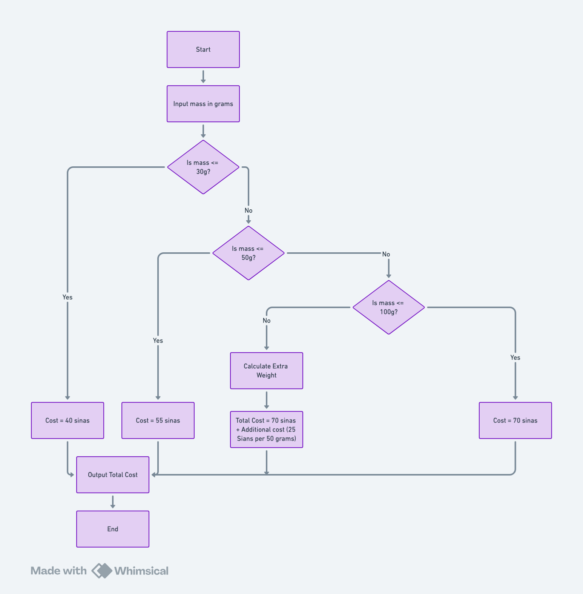

Introduction
This documentation explains the workings of the Rahmania Mailing Cost Calculator web application. The calculator determines mailing costs based on a letter's weight, with rates set according to Rahmania's postal rules. This version is deployed as a Flask web application, making it accessible online.
Test Data
The following chart shows 10 examples of inputs with the output and we can use this to test the application:
| Test Case | Weight (g) | Expected Cost (sinas) |
|---|---|---|
| 1 | 10 | 40 |
| 2 | 30 | 40 |
| 3 | 31 | 55 |
| 4 | 50 | 55 |
| 5 | 51 | 70 |
| 6 | 100 | 70 |
| 7 | 101 | 95 |
| 8 | 149 | 95 |
| 9 | 150 | 95 |
| 10 | 151 | 120 |
Algorithm & Flowchart
The following algorithm explains how the mailing program calculates the cost based on weight:
- Input: Prompt the user for the mass of the letter (in grams).
- Calculate Cost Based on Weight:
- If weight is 30 grams or less, set cost to 40 sinas.
- If weight is between 30 grams and 50 grams, set cost to 55 sinas.
- If weight is between 50 grams and 100 grams, set cost to 70 sinas.
- If weight is over 100 grams:
- Set the base cost to 70 sinas.
- Add 25 sinas for each additional 50 grams (or part thereof) above 100 grams.
- Output: Display the calculated mailing cost.
Flowchart for Mailing Program
Code Explanation
This program was made with Python and Flask. Flask is used to deploy the application and provide a web interface, while Python handles the core functionalities. Below is the code explanation for the program:
1. Imports:
- Standard and external libraries are imported for various functionalities:
- `os`, `csv`, `requests` handle file and API operations.
- `Flask` and `flask` modules manage the web application, routing, sessions, and responses.
2. Application Setup:
- The application is created with `app = Flask(__name__)`.
- `app.secret_key` secures the session data used to store the user's mailing history.
3. Utility Functions:
- `convert_to_grams(mass, unit)`: Converts any weight unit (grams, kilograms, ounces, pounds) into grams. This is essential for a standardized cost calculation.
- `calculate_mail_cost(mass)`: Calculates mailing costs based on the provided mass in grams. Costs are assigned depending on weight thresholds:
- Up to 30 grams: base cost of 40.
- Up to 50 grams: base cost of 55.
- Up to 100 grams: base cost of 70.
- Above 100 grams: a base cost is applied for the first 100 grams, and additional weight is charged at 25 TRY for every 50 grams.
- `convert_currency(amount, target_currency)`: Converts the calculated cost from TRY to another specified currency using exchange rates fetched from an external API. If the API request fails, it returns a conversion error message.
4. Main Route (`@app.route("/")`):
- `index()` Function: This handles the main logic of the application.
- When the page is accessed via `GET`, it renders the form.
- When the page is accessed via `POST` (form submission), it retrieves and validates user inputs (`mass`, `unit`, and `currency`).
- The weight is converted to grams and passed to `calculate_mail_cost` for a cost calculation.
- The calculated cost in TRY is converted into the user-specified currency using `convert_currency`.
- The cost breakdown and converted total are displayed to the user.
- Each calculation is stored in the session history for easy retrieval and export.
5. Clear History Route (`@app.route("/clear_history")`):
- Clears the session history by resetting it to an empty list.
- Redirects back to the main page after clearing.
6. Export to CSV Route (`@app.route("/export_csv")`):
- Generates a CSV file of the user's calculation history.
- The CSV file contains columns for weight, cost, and a detailed breakdown.
- CSV data is dynamically generated and returned as a downloadable file with headers for appropriate file type.
7. Code Flow:
- The user accesses the main page and inputs their package details.
- The weight is converted, and costs are calculated based on weight thresholds.
- The result is shown, and users have options to clear history or export calculations.
8. Security Considerations:
- `app.secret_key` secures session data.
- The application is configured to run on host `0.0.0.0` for general accessibility.
9. Flask Run Configuration:
- `if __name__ == "__main__"`: Ensures the app runs directly with `python app.py`.
- Configures port `808` for local development or deployment environments.